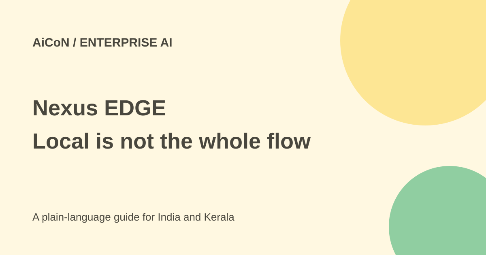

Yellow.ai Nexus EDGE: local tools, cloud questions
Nexus EDGE runs helpdesk tools on an employee device. Local execution does not by itself prove every result stays local: the official tool docs describe results sent back through the chat stream.

What is Nexus EDGE?
Yellow.ai describes an enterprise agent deployed to employee computers to diagnose and fix IT problems. Examples include printers, software and device-support tasks. It combines a cloud Nexus agent grounded in company knowledge and systems with a desktop runtime that runs tools locally.
The product page says common first-line issues resolve in under a minute. That is a vendor claim, not a guarantee for every machine, incident or network. This guide did not install a desktop client or repair a device.
Cloud reasoning and local execution
The marketing page describes a cloud agent orchestrating across knowledge bases, procedures, identity and backend applications. Its tools documentation says a request travels down the chat stream to the desktop, executes locally and posts a result back.
These details matter when reviewing privacy. A separate marketing section says sensitive data never leaves the machine and claims zero data exposure. The documentation does not establish that every result, prompt or diagnostic field stays on-device.
Treat that as a data-flow question to verify with the vendor and your actual deployment, not a blanket promise. Ask which fields return to the cloud, which models process them, what is redacted, and how logs and retention work. Local remediation and fully local processing are different claims.
Permissions and approvals
Yellow.ai says actions run within the signed-in user's role-based permissions, without hidden privilege escalation. The docs classify tools as read-only or mutating. Read-only examples such as printer lists, print queues and system information run immediately without a prompt.
Mutating examples such as cancelling a print job, restarting a spooler or changing a default printer require an Allow or Deny gate. The docs describe a ten-minute decision window. Approval permits that tool call; it should not be confused with a general instruction to repair anything on the machine.
Reversible by default is not no risk
The product page describes actions as reversible by default and audit-logged. That does not prove every possible tool or downstream effect can be undone. Cancelling a job, changing software or altering a browser state can still disrupt work.
Inspect the proposed action and scope before allowing it. Test how denial, timeout and partial failure behave. Make sure there is a human helpdesk route for a problem that the agent cannot safely fix.
Is there a free consumer app?
The current product page directs organisations toward a demo and enterprise deployment. The sources checked do not establish self-service consumer signup or a public numeric tariff. Do not assume local execution means free use.
Get a quote covering seats, platform usage, models, deployment and support. Verify supported operating systems and the exact tools available in your environment before planning company-wide installation.
How an IT team can evaluate it
- Choose a limited pilot group and approved low-risk support cases.
- Map the cloud agent, desktop client, data returns and logs.
- Use a test device and least-privilege user role.
- Review each tool's read-only or mutating classification.
- Test Allow, Deny, timeout, rollback and escalation.
- Inspect the actual audit record and returned data for secrets.
- Expand only after security, employee privacy and support owners approve.
For Indian workplaces
An organisation handling customer, student or employee records should inspect data destinations and vendor terms before deployment. A Kerala office can begin with a printer or non-sensitive test case rather than granting broad access to production devices.
Tell employees what the agent can inspect, what runs without a prompt and who can read logs. A no-remote-control statement is not a substitute for understanding screen, file and system access.
What changed since the original post?
The archive post stressed user permissions, approval and reversibility. This guide adds the official read-only-versus-mutating distinction and the conflict between local-privacy marketing and returned tool results. It does not promise every action asks first or every diagnostic field stays local.
Frequently asked questions
Does every tool show an approval prompt?
No. The docs say read-only tools run immediately.
Is the whole service offline?
No such claim is established; a cloud agent is described.
Was a repair tested?
No. This guide checks public product and tool documentation.
Sources: Product page · Official edge-tool mechanics. Checked 7 October 2026.